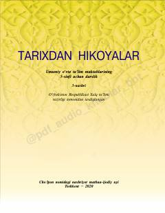

TH5-sinf o‘quvchilari uchun O‘zbekiston tarixi fanidan asosiy darslik.
Ushbu darslik umumiy o‘rta ta’lim maktablarining 5-sinf o‘quvchilari uchun mo‘ljallangan bo‘lib, O‘zbekiston tarixi va tarix fanining asosiy tushunchalarini o‘rgatadi. Kitobda tarixiy manbalar, Vatan tushunchasi va o‘tmishni o‘rganishning ahamiyati haqida ma’lumotlar berilgan.